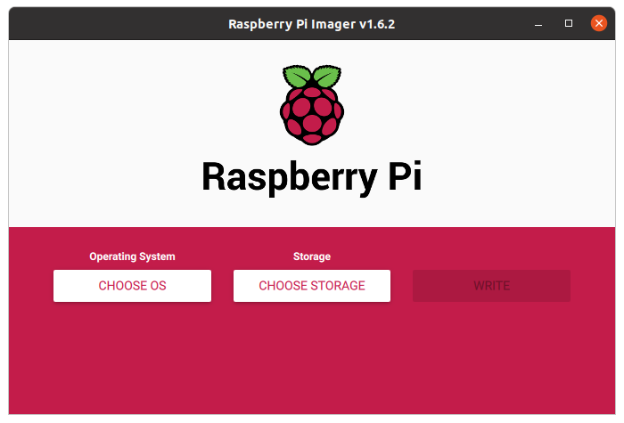
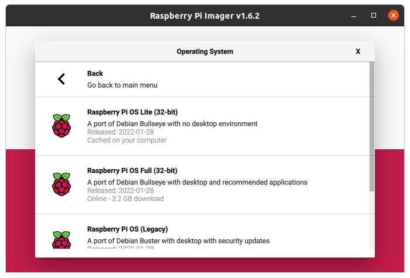
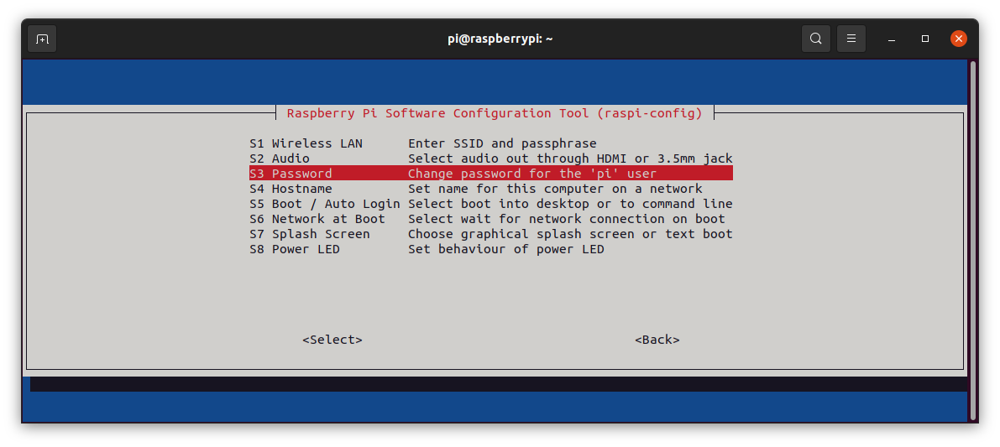
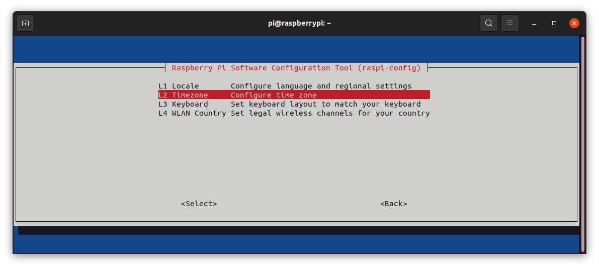
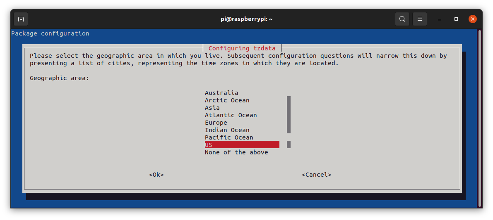
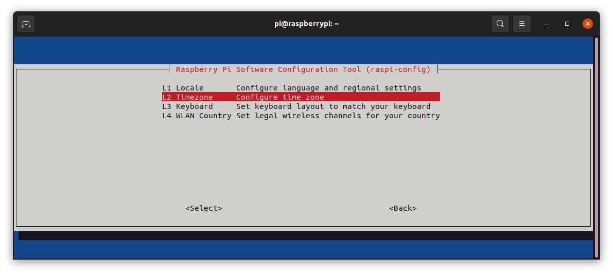
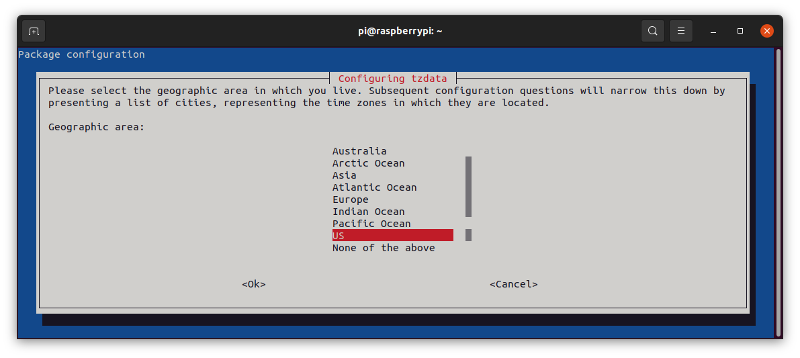
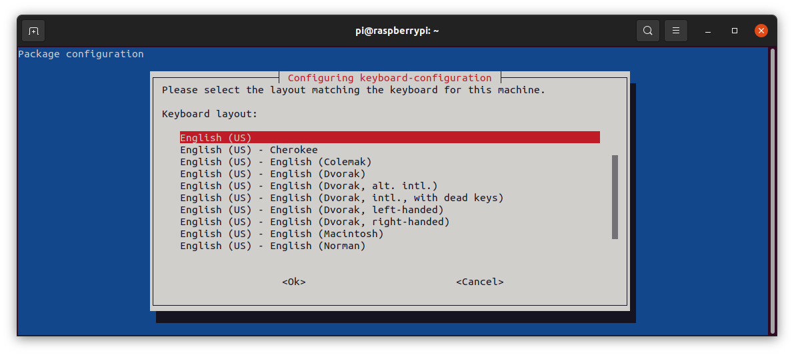
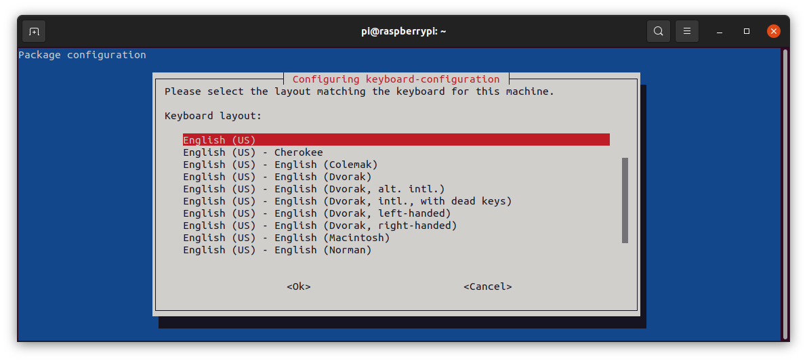

Install Raspberry PI OS image
on Raspberry Pi
Follow Getting Started instructions on official raspberrypi.com website
Strongly recommend using the Raspberry PI Imager and selecting "Raspberry Pi OS Lite (32-bit)"

select "Raspberry Pi OS (other)"

select "Raspberry Pi OS Lite (32-bit)"

Launch Raspi-Config
from raspberry pi terminal
pi@raspberrypi:~$ sudo raspi-config

System Options
you may want to change Password and Hostname 
Interface Options
enable SSH for remote access

Localization Options

Under Locale, use spacebar to deselect "en_GB.UTF-8 UTF-8"
 and select "en_US.UTF-8 UTF-8
none
and select "en_US.UTF-8 UTF-8
none
 Timezone

US

As we are favored enough to live in the The Republic of Texas
Timezone

US

As we are favored enough to live in the The Republic of Texas
 Keyboard
Keyboard
 Generic 105-key PC (intl.)
Other
Generic 105-key PC (intl.)
Other
 English (US)
English (US)
 Scroll up to English (US)

Default "Enter" the 2 screens then Finish
Scroll up to English (US)

Default "Enter" the 2 screens then Finish
Remote ssh login
from PC terminal you can now remote login to your rascsi
alex@xanadu_pc:~$ ssh pi@rascsi.local
pi@rascsi:~$
Update and Upgrade
sudo apt update
sudo apt upgrade